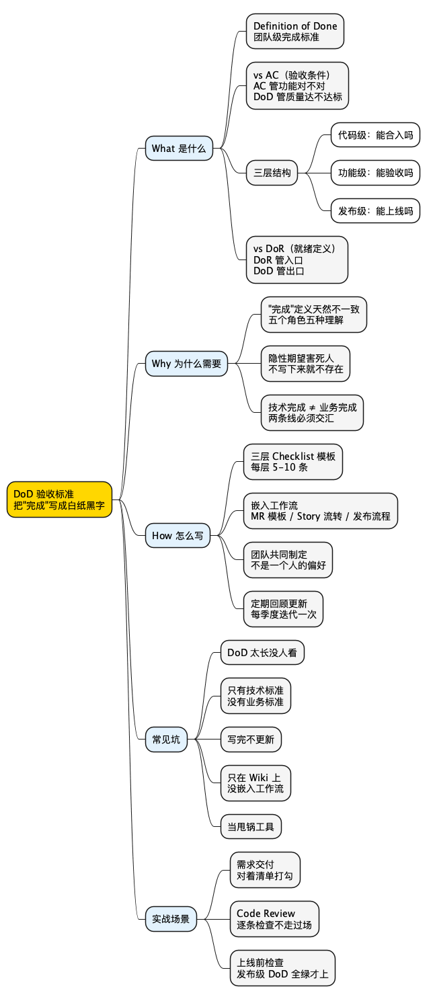

职场工具箱之验收标准（Definition of Done）：为什么交付后争议才开始？
Posted on Wed 11 March 2026 in Method • 5 min read
| Abstract | 职场工具箱之验收标准（Definition of Done）：为什么交付后争议才开始？ |
|---|---|
| Authors | Walter Fan |
| Category | Method |
| Version | v1.0 |
| Updated | 2026-03-06 |
| License | CC-BY-NC-ND 4.0 |
简短大纲
展开看看
- 扎心场景：你说"做完了"，产品说"这不是我要的" - DoD 是什么：Definition of Done vs Acceptance Criteria 的区别；DoD 的三层（代码级/功能级/发布级）；和 DoR 的关系 - 为什么交付后争议才开始："完成"的定义不一致、隐性期望 vs 显性标准、技术人的"完成" vs 业务人的"完成" - 怎么写 DoD：三层 checklist 模板 + 三个实战场景改写（需求交付/Code Review/上线前检查） - 技术人常踩的坑：DoD 太长没人看、只有技术标准没有业务标准、DoD 不更新 - 总结 + 行动清单 + 思维导图 + 系列回顾 + 扩展阅读1. 扎心场景：你说"做完了"，产品说"这不是我要的"
这个场景你一定经历过。
Sprint 最后一天，你把代码合进主分支，CI 全绿，单元测试覆盖率 85%，Swagger 文档也更新了。你在群里发了一句：
"用户导出功能已完成，MR 已合入 main。"
你觉得自己干得漂亮。
然后产品经理来了一句：
"导出的 CSV 文件里没有用户注册时间啊？需求文档里写了的。"
你翻了翻文档，确实有一行小字写着"包含注册时间"。你漏了。
你赶紧补上，半小时搞定。再发一次：
"已补充注册时间字段，重新部署到测试环境了。"
测试同学接过来，跑了一圈，又甩过来一句：
"导出 10 万条数据的时候，页面直接卡死了。这算完成吗？"
你心里一万匹马奔过：我又没说支持 10 万条啊！
但你仔细想想，需求文档里也没说"不支持 10 万条"。
小白提示：Sprint 是敏捷开发里的一个迭代周期，通常 1-2 周。CI 是持续集成（Continuous Integration），代码提交后自动跑测试。MR 是 Merge Request，合并请求。
这就是典型的"完成"争议：
- 你的"完成"：代码写好了，测试过了，能跑。
- 产品的"完成"：功能符合需求文档的每一条描述。
- 测试的"完成"：各种边界场景都不会炸。
- 运维的"完成"：上线不会把服务搞挂。
四个人说的"完成"，根本不是同一件事。
这不是谁的错。这是因为你们从来没有坐下来，把"完成"的定义写成白纸黑字。
DoD 就是干这件事的。
2. What：DoD 到底是什么？
DoD，全称 Definition of Done，直译就是"完成的定义"。
听起来很简单对吧？但它解决的问题一点都不简单：在动手之前，让所有人对"什么叫完成"达成共识。
不是口头说说，是写成一张清单，每一条都可以打勾。
打个比方：你去餐厅点了一份牛排，你心里想的是"七分熟、配黑椒汁、旁边放一小碟沙拉"。但你只说了"来份牛排"。厨师给你端上来一份全熟的、浇了番茄酱的、没有配菜的牛排。你说"这不是我要的"，厨师说"你也没说啊"。
DoD 就是那张写清楚了"七分熟、黑椒汁、配沙拉"的点单。
2.1 DoD vs Acceptance Criteria：别搞混了
很多人把 DoD 和 Acceptance Criteria（验收条件，简称 AC）搞混。它们有关系，但不是一回事。
| DoD（Definition of Done） | AC（Acceptance Criteria） | |
|---|---|---|
| 作用域 | 团队级别，适用于所有 Story/Task | 单个 Story/Task 级别 |
| 内容 | 通用质量标准（代码审查、测试覆盖、文档更新等） | 这个具体需求要满足的业务条件 |
| 谁定 | 团队共同约定 | 产品经理 + 开发一起写 |
| 变化频率 | 相对稳定，偶尔迭代 | 每个 Story 都不一样 |
| 类比 | 餐厅的卫生标准（每道菜都要达标） | 这道菜的口味要求（七分熟、黑椒汁） |
简单说：
- AC 回答的是"这个需求做对了没有"——功能层面。
- DoD 回答的是"这个需求做完了没有"——质量层面。
一个 Story 要算"真正完成"，必须同时满足 AC（功能对）和 DoD（质量达标）。
小白提示：Story（用户故事）是敏捷开发里描述需求的最小单元，通常格式是"作为 XX 用户，我希望 XX，以便 XX"。
2.2 DoD 的三层：代码级 / 功能级 / 发布级
DoD 不是一张扁平的清单。我建议分三层来写，每层对应不同的"完成"粒度：
第一层：代码级 DoD（Code Done）
这是最基础的一层，回答"这段代码可以合入主分支了吗？"
- 代码通过 Code Review（至少 1 人 Approve）
- 单元测试覆盖关键路径，覆盖率不低于团队基线（如 80%）
- 无 P0/P1 级别的静态扫描告警（如 SonarQube）
- 代码风格符合团队规范（Lint 通过）
- 提交信息（Commit Message）符合约定格式
第二层：功能级 DoD（Feature Done）
这一层回答"这个功能可以交给测试/产品验收了吗？"
- 满足该 Story 的所有 Acceptance Criteria
- 集成测试通过（API 级别）
- 在测试环境上可演示
- 相关文档已更新（API 文档、用户手册等）
- 性能满足基本要求（如响应时间 < 500ms）
- 无已知的阻塞性 Bug
第三层：发布级 DoD（Release Done）
这一层回答"这个版本可以上线了吗？"
- 所有 Story 的功能级 DoD 已满足
- 回归测试全部通过
- 安全扫描无高危漏洞
- 监控和告警已配置
- 回滚方案已准备并验证
- 发布文档（Release Notes）已编写
- 产品经理签字确认（或在系统中标记 Approved）
你看，三层 DoD 就像三道关卡：代码关、功能关、发布关。每一关都有明确的"通过条件"，不是靠感觉，不是靠默契，是靠清单。
2.3 DoD 和 DoR 的关系：入口和出口
说到 DoD，就不得不提它的"兄弟"——DoR（Definition of Ready）。
- DoR：一个需求"准备好了"才能进入开发。回答"这个 Story 可以开始做了吗？"
- DoD：一个需求"完成了"才能交付。回答"这个 Story 可以算做完了吗？"
| DoR（Definition of Ready） | DoD（Definition of Done） | |
|---|---|---|
| 位置 | 入口——开发前 | 出口——开发后 |
| 目的 | 确保需求足够清晰，不会边做边猜 | 确保交付质量达标，不会边验边吵 |
| 典型条件 | AC 已写清、设计稿已确认、依赖已识别、优先级已排 | 代码已审查、测试已通过、文档已更新、可演示 |
| 类比 | 食材备齐了才能开始炒菜 | 菜炒好了、摆盘了、试过味了才能上桌 |
DoR 管入口，DoD 管出口。两头都卡住，中间的开发过程才不会乱。
很多团队只有 DoD 没有 DoR，结果需求稀里糊涂就进了 Sprint，开发做到一半发现"这个需求根本没想清楚"，然后返工、扯皮、延期。
我的经验是：DoR 和 DoD 要一起建，缺一不可。 DoR 是"别让垃圾进来"，DoD 是"别让半成品出去"。
3. Why：为什么交付后争议才开始？
你可能会说："我们团队也有 DoD 啊，写在 Wiki 上呢。"
但你回忆一下，上次有人在交付前真的逐条对着 DoD 打勾，是什么时候？
大多数团队的 DoD 是"有但没人看"。争议照样发生。为什么？
3.1 "完成"的定义天然不一致
这不是谁偷懒的问题，是角色决定的。
每个角色对"完成"的关注点天然不同：
| 角色 | 他心里的"完成" | 他最怕的事 |
|---|---|---|
| 开发 | 代码能跑、测试通过、MR 合入 | 返工、需求变更 |
| 产品经理 | 功能符合需求、用户体验OK | 上线后用户投诉 |
| 测试 | 各种场景都不会炸、边界覆盖 | 线上出 Bug 被追责 |
| 运维/SRE | 上线不会搞挂服务、能回滚 | 半夜被告警叫醒 |
| 业务方 | 能解决业务问题、数据能跑通 | 花了钱没效果 |
五个角色，五种"完成"。如果你不把它们对齐，交付那天就是"各说各话"的开始。
3.2 隐性期望 vs 显性标准
很多争议来自"我以为你知道"。
产品经理以为开发会自动考虑性能。开发以为产品经理会明确写出性能要求。测试以为开发会自己测边界。运维以为开发会配好监控。
每个人都有一堆"隐性期望"——他觉得理所当然、不需要说出来的东西。
但隐性期望最大的问题是：你不说，别人就不知道；别人不知道，就不会做；不做，你就会失望；失望了，你就会觉得对方不靠谱。
DoD 的核心价值就是：把隐性期望变成显性标准。
你觉得"代码要有单元测试"是常识？写进 DoD。你觉得"上线前要配监控"是基本操作？写进 DoD。你觉得"API 文档要同步更新"是应该的？写进 DoD。
不写，就等于不存在。
我有个同事说过一句话，我觉得特别精辟："没有写下来的共识，就不是共识，只是巧合。"
3.3 技术人的"完成" vs 业务人的"完成"
这是最常见的冲突。
技术人的"完成"是自底向上的：代码写好了 → 测试过了 → 部署了 → 完成。
业务人的"完成"是自顶向下的：用户能用了 → 数据能跑了 → 问题解决了 → 完成。
两条线的交汇点在哪里？在"功能级 DoD"。
如果你的 DoD 只有技术标准（代码审查、测试覆盖、CI 通过），没有业务标准（AC 满足、可演示、文档更新），那技术人觉得"完成了"，业务人觉得"还没开始"。
反过来也一样：如果你的 DoD 只有业务标准，没有技术标准，那业务人觉得"能用就行"，技术人觉得"这是在埋雷"。
好的 DoD 必须同时覆盖技术和业务两个维度。
4. How：怎么写 DoD？
说了这么多道理，来点实操的。
4.1 DoD 模板：三层 Checklist
下面是我在实际项目中用过的 DoD 模板，你可以直接拿去改。
代码级 DoD Checklist
□ 代码通过 Code Review（至少 1 人 Approve，无未解决的 Comment）
□ 单元测试覆盖关键路径（覆盖率 ≥ 团队基线，如 80%）
□ 静态代码扫描无 P0/P1 告警
□ Lint / 代码风格检查通过
□ Commit Message 符合团队约定格式（如 Conventional Commits）
□ 无硬编码的密钥、Token 或敏感信息
□ 新增/修改的公共方法有注释或文档
功能级 DoD Checklist
□ 满足该 Story 的所有 Acceptance Criteria
□ 集成测试 / API 测试通过
□ 在测试环境上可演示，产品经理已确认
□ 相关文档已更新（API 文档、用户手册、Changelog）
□ 性能满足基本要求（如 P95 响应时间 < 500ms）
□ 无已知的阻塞性 Bug（P0/P1）
□ 国际化 / 无障碍（如适用）已处理
□ 数据迁移脚本（如适用）已验证
发布级 DoD Checklist
□ 所有 Story 的功能级 DoD 已满足
□ 回归测试全部通过（自动化 + 手动关键路径）
□ 安全扫描无高危 / 严重漏洞
□ 监控面板和告警规则已配置并验证
□ 回滚方案已准备并在 Staging 环境验证
□ 灰度发布策略已确认（如适用）
□ Release Notes 已编写
□ 产品经理 / 业务方签字确认
□ 运维 / SRE 确认发布窗口和值班安排
小白提示：P95 响应时间 是指 95% 的请求在这个时间内完成。比如 P95 < 500ms 意味着 100 个请求里至少 95 个在 500 毫秒内返回。Staging 环境 是和生产环境几乎一样的预发布环境，用来做最后一轮验证。
4.2 实战场景改写：三个场景，❌ 无效版 vs ✅ DoD 版
场景 1：需求交付——"用户导出功能已完成"
❌ 无效版（开发觉得完了，产品觉得没完）
"用户导出功能已完成，MR 已合入 main，CI 全绿。"
产品经理的内心 OS：导出格式对吗？字段全吗？10 万条数据能跑吗？文档更新了吗？我怎么验收？
✅ DoD 版（对着清单打勾，一目了然）
用户导出功能交付确认：
代码级： ✅ Code Review 通过（@张三 Approved） ✅ 单元测试覆盖率 87%，关键路径全覆盖 ✅ SonarQube 无 P0/P1 告警 ✅ 无硬编码敏感信息
功能级： ✅ AC-1：支持导出 CSV 和 Excel 两种格式 ✅ AC-2：包含用户名、邮箱、注册时间、最后登录时间四个字段 ✅ AC-3：支持最多 10 万条数据导出（异步任务 + 邮件通知） ✅ 测试环境已部署，演示链接：[xxx] ✅ API 文档已更新：[xxx] ✅ P95 响应时间：导出 1 万条 < 3s，10 万条走异步队列 ⬜ 待产品经理确认
遗留项： 导出文件的列顺序待产品确认，当前按字段创建时间排序。
看到区别了吗？第一种是"我做完了你自己看"，第二种是"我做完了，这是证据，你来打勾"。
场景 2：Code Review——"代码看起来没问题，LGTM"
❌ 无效版（走过场的 Review）
"LGTM 👍"
小白提示：LGTM = Looks Good To Me，Code Review 中表示"我看了，没问题"。但很多时候它的真实含义是"我瞄了一眼，不想细看了"。
✅ DoD 版（对着代码级 DoD 逐条检查）
Code Review 确认（对照代码级 DoD）：
✅ 逻辑正确，边界处理合理（特别看了空列表和超大数据量的情况） ✅ 单元测试覆盖了 happy path 和 3 个 edge case ✅ 无硬编码配置，数据库连接串走环境变量 ✅ 命名清晰，注释充分 ⚠️ 建议：
exportUsers()方法超过 80 行，建议拆分为validateParams()+queryData()+formatOutput()三个子方法。不阻塞合入，下个迭代优化。结论：Approve，可合入。
第一种 Review 是"签字盖章"，第二种是"真的在检查质量"。
场景 3：上线前检查——"测试都过了，可以上了"
❌ 无效版（测试说过了就上？）
"回归测试全过了，可以发布。"
运维的内心 OS：监控配了吗？回滚方案有吗？灰度策略呢？半夜出问题谁值班？
✅ DoD 版（对着发布级 DoD 逐条确认）
v2.3.0 发布前检查（对照发布级 DoD）：
✅ 所有 12 个 Story 的功能级 DoD 已满足 ✅ 自动化回归测试 326/326 通过 ✅ 手动关键路径测试 15/15 通过 ✅ 安全扫描：无高危漏洞，2 个中危已评估（不影响本次发布，下迭代修复） ✅ Grafana 监控面板已配置：[链接] ✅ 告警规则：错误率 > 1% 触发 P1 告警，响应时间 P95 > 1s 触发 P2 告警 ✅ 回滚方案：数据库无 breaking change，可直接回滚到 v2.2.9 ✅ 灰度策略：先放 5% 流量，观察 2 小时，无异常再全量 ✅ Release Notes 已发布：[链接] ✅ 产品经理 @李四 已确认 ✅ 值班安排：发布当天 @王五 on-call
结论：满足发布级 DoD，可以上线。
4.3 一张对比表：无效交付 vs DoD 交付
| 维度 | ❌ 无效交付 | ✅ DoD 交付 |
|---|---|---|
| 完成标准 | "我觉得做完了" | 对着清单逐条打勾 |
| 沟通方式 | "功能已完成" | "功能已完成，这是证据清单" |
| 争议处理 | 交付后扯皮 | 交付前对齐 |
| 质量保障 | 靠个人自觉 | 靠团队约定 |
| 隐性期望 | 各自脑补 | 写成白纸黑字 |
| 返工概率 | 高（"这不是我要的"） | 低（"清单上都打勾了"） |
| Code Review | LGTM 走过场 | 对照 DoD 逐条检查 |
| 上线信心 | "应该没问题吧……" | "清单全绿，可以上" |
4.4 技术人常踩的坑
坑 1：DoD 太长，没人看
我见过有团队的 DoD 写了 50 多条，密密麻麻两页纸。结果呢？没人看。
DoD 不是越长越好。每一层控制在 5-10 条以内。 超过 10 条，人的注意力就开始打折了。
如果你发现 DoD 越写越长，说明你在把"所有好的实践"都往里塞。但 DoD 不是"最佳实践大全"，它是"最低完成标准"。
我的原则是：DoD 里的每一条，都必须是"不做就会出问题"的。 如果一条删掉了也不会影响交付质量，那它就不该在 DoD 里。
坑 2：只有技术标准，没有业务标准
这是技术团队最常犯的错。
DoD 里全是"代码审查通过""测试覆盖率达标""CI 全绿"，但没有一条提到"产品经理确认""可演示""文档更新"。
结果就是：技术上完美，业务上不及格。代码质量很高，但功能不是产品要的。
DoD 必须同时覆盖技术维度和业务维度。 至少在功能级 DoD 里，要有"满足 AC""产品确认""可演示"这几条。
坑 3：DoD 写完就不更新了
DoD 不是宪法，不需要庄严不可修改。
团队在成长，项目在变化，DoD 也应该跟着迭代。
我建议每个季度（或每 3-4 个 Sprint）回顾一次 DoD：
- 有没有哪条已经过时了？（比如团队已经不用 SonarQube 了）
- 有没有哪个坑反复踩，应该加进 DoD？（比如"上线前必须配监控"）
- 有没有哪条太模糊，需要细化？（比如"测试通过"到底是什么测试？）
DoD 是活的文档，不是墙上的标语。
坑 4：DoD 只在 Wiki 上，没有嵌入工作流
DoD 写在 Wiki 上，但开发提 MR 的时候不看，产品验收的时候不看，上线的时候也不看。
解决办法很简单：把 DoD 嵌入到你的工作流里。
- MR 模板里加上代码级 DoD 的 checklist（GitHub/GitLab 都支持 MR Template）
- Story 卡片的"完成"状态流转时，要求填写功能级 DoD 的确认项
- 发布流程里加一个"发布级 DoD 检查"的环节
工具能帮你的忙，就别靠人的记忆力。
坑 5：把 DoD 当成"甩锅工具"
有些人把 DoD 当成"你看，清单上没写这条，所以不是我的责任"。
这就走偏了。
DoD 的目的是对齐期望、提升质量，不是划清界限、推卸责任。
如果你发现团队开始用 DoD 互相甩锅，说明 DoD 的建立过程出了问题——它应该是团队共同讨论、共同认可的，而不是某个人单方面制定的。
DoD 是团队的契约，不是某个人的武器。
5. 进阶：怎么让 DoD 真正落地？
写 DoD 不难，难的是让它活下来。
5.1 从小开始，逐步加码
如果你的团队从来没有 DoD，别一上来就搞三层 50 条。
先从最痛的点开始。
比如你们最常见的问题是"上线后出 Bug"，那就先写一个发布级 DoD，只有 5 条：
□ 回归测试全过
□ 监控已配置
□ 回滚方案已验证
□ 产品确认
□ 值班安排已确认
跑两个 Sprint，觉得有用，再往下延伸到功能级和代码级。
5.2 让团队一起写，而不是一个人写
DoD 必须是团队共识，不是 Tech Lead 的个人偏好。
我建议在 Sprint 回顾会上花 15 分钟讨论 DoD：
- "上个 Sprint 有没有因为'完成标准不清楚'导致的问题？"
- "如果有，我们应该在 DoD 里加什么？"
- "现有的 DoD 有没有哪条是多余的？"
让每个角色都参与：开发、测试、产品、运维。每个人都有发言权，每个人都要认可。
5.3 DoD 的"毕业机制"
有些 DoD 条目，团队已经内化成习惯了，不需要再提醒。
比如"Commit Message 符合约定格式"——如果团队已经配了 Git Hook 自动检查，那这条就可以从 DoD 里"毕业"了，因为工具已经替你兜底了。
DoD 应该聚焦在"还需要人为注意"的事项上。 已经被工具自动化的，可以移出去。
这样 DoD 才能保持精简，不会越来越臃肿。
6. 总结
DoD 不是什么高深的方法论，它就是一张清单。
但这张清单解决的是一个最基本、最致命的问题：你说的"完成"和我说的"完成"是不是同一件事。
如果不是，那交付那天就是争议的开始。
如果是，那交付那天就是信任的积累。
一句话记住 DoD：在动手之前，把"完成"的定义写成白纸黑字，让所有人对着同一张清单打勾。
行动清单（30 秒自检）
- [ ] 我的团队有没有明确的 DoD？（不是"好像有"，是"我能找到那个文档"）
- [ ] DoD 是不是分了层次？（代码级 / 功能级 / 发布级）
- [ ] DoD 是不是同时覆盖了技术标准和业务标准？
- [ ] DoD 有没有嵌入到工作流里？（MR 模板 / Story 流转 / 发布流程）
- [ ] DoD 有没有定期回顾和更新？（至少每季度一次）
- [ ] 团队成员是不是都认可这份 DoD？（不是一个人写的，是大家一起定的）
- [ ] 我有没有在交付时，真的逐条对着 DoD 打勾？
思维导图
@startmindmap
<style>
mindmapDiagram {
node { BackgroundColor #FAFAFA }
:depth(0) { BackgroundColor #FFD700 }
:depth(1) { BackgroundColor #E3F2FD }
:depth(2) { BackgroundColor #F5F5F5 }
}
</style>
* DoD 验收标准\n把"完成"写成白纸黑字
** What 是什么
*** Definition of Done\n团队级完成标准
*** vs AC（验收条件）\nAC 管功能对不对\nDoD 管质量达不达标
*** 三层结构
**** 代码级：能合入吗
**** 功能级：能验收吗
**** 发布级：能上线吗
*** vs DoR（就绪定义）\nDoR 管入口\nDoD 管出口
** Why 为什么需要
*** "完成"定义天然不一致\n五个角色五种理解
*** 隐性期望害死人\n不写下来就不存在
*** 技术完成 ≠ 业务完成\n两条线必须交汇
** How 怎么写
*** 三层 Checklist 模板\n每层 5-10 条
*** 嵌入工作流\nMR 模板 / Story 流转 / 发布流程
*** 团队共同制定\n不是一个人的偏好
*** 定期回顾更新\n每季度迭代一次
** 常见坑
*** DoD 太长没人看
*** 只有技术标准\n没有业务标准
*** 写完不更新
*** 只在 Wiki 上\n没嵌入工作流
*** 当甩锅工具
** 实战场景
*** 需求交付\n对着清单打勾
*** Code Review\n逐条检查不走过场
*** 上线前检查\n发布级 DoD 全绿才上
@endmindmap

系列回顾
- 4D 总结法
- 黄金圈法则
- TNB 表达模型
- FAB 提案法
- STAR 面试法
- 同理心三方法
- 5W1H + 8C1D
- 艾森豪威尔矩阵
- PDCA 循环
- SMART 原则
- 领导力
- 逻辑树
- 解决问题五步法
- 5 个 Why
- 沟通四要素 CARE
- 金字塔原理
- 三点法
- DACI
- 四线复盘法
- RAPID
- 5S 问题处理法
- SWOT 自我定位
- AARRR 漏斗
- 第一性原理
- RACI
- 非暴力沟通
- SCAMPER
- MVP 思维
- ABC 情绪理论
- AI Agent 学职场英语
- 向上管理
- OODA 循环
- OKR
- MoSCoW 优先级
- RICE / ICE 评分
- 里程碑计划
- 验收标准 DoD（本篇）
- 范围管理
扩展阅读
- Scrum Guide — Definition of Done（Scrum 官方指南中关于 DoD 的定义）
- Atlassian — Definition of Done（Atlassian 的 DoD 实践指南）
- Mountain Goat Software — Definition of Done（Mike Cohn 关于多层 DoD 的讨论）
- Henrik Kniberg — Scrum and XP from the Trenches（实战中的 DoD 经验）
本作品采用知识共享署名-非商业性使用-禁止演绎 4.0 国际许可协议进行许可。